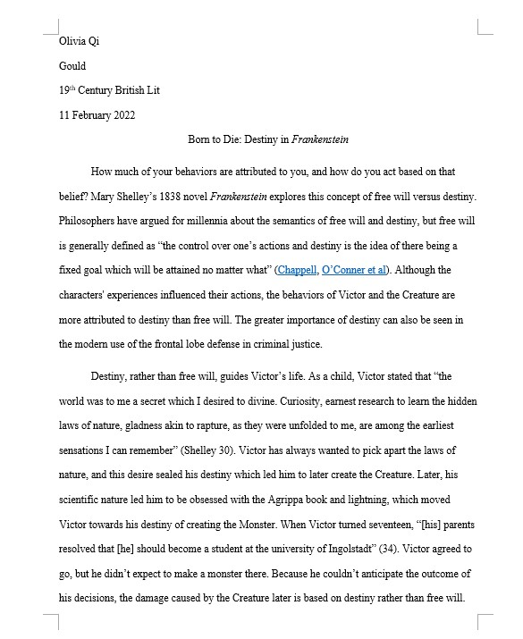
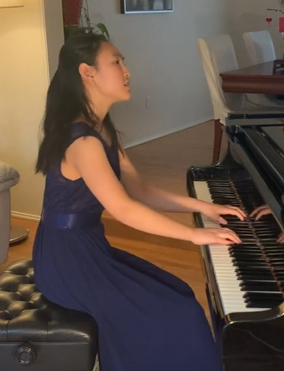
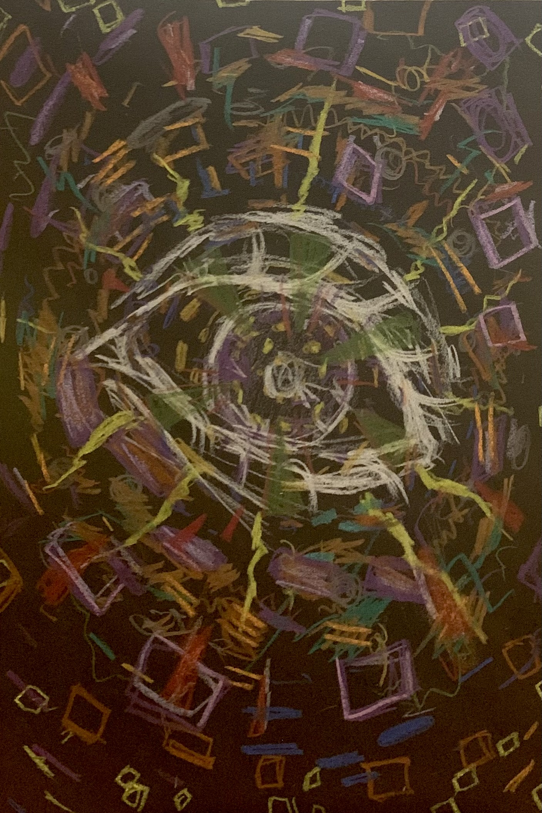

Education
I'm a sophomore at Eastside Preparatory School in Kirkland, Washington. I have a 4.0 unweighted GPA and I'm the copy editor of my school newspaper. I love art and music, and I plan to continue pursuing them in the future.
Classical singer

I'm a classical mezzo-soprano and I've been singing classical music for 5 years. I've won state and regional competitions and competeted at the national level. Recently, I won gold in the 2022 National Associations of Teachers of Singing (NATS) state awards and placed second in the 2021 NATS Northwest regional competition. This is my second year in Seattle Opera's Teen Vocal Studio. There, I worked with renowned professionals such as Brandie Sutton, Stacey Mastrian, Sadiqua Iman, and Grammy-nominated singer Emily Fons.
Classical pianist
I've been playing piano for 10 years, winning multiple competitions. Recently, I won silver in the Russian Chamber Music Ensemble and Washington Music Teachers National Association Competition's piano duet divisions with my sister. I've also performed live on the local classical music radio station 98.1 KING FM's Northwest Focus program.
Artist
I draw and paint still lifes, portraits, and surreal scenes inspired by music. I drew the cover art for Oliver Crosby's single "Kalimoxto ", but that's just a quick sketch that I did in OneNote during school.
Web design

I made this website myself, so that should show you that I do web design. This is my second year making websites, and I've made some cool websites for class. I can use HTML, CSS, and JavaScript.